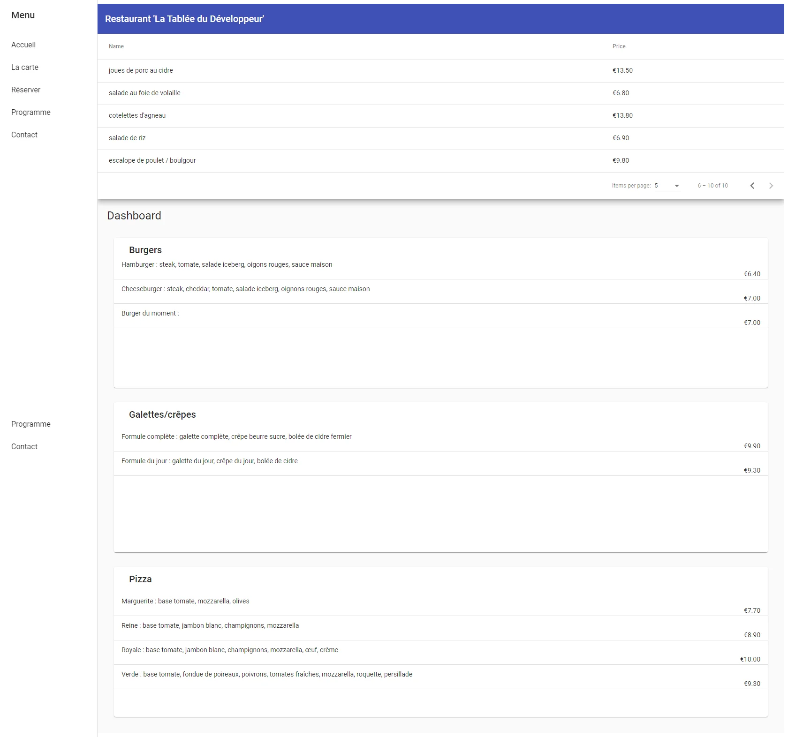

Angular: Restaurant Website
Summary
Restaurant website with menus, booking and scheduling of special evenings with a searchbar.
Concepts covered:
- Routes (RouterModule, Routes, Route)
- Modules / Components / Providers (app.module.ts: import {decorators} / NgModule)
- Material Data Table + Data source (using interfaces as models)
- Templates: Forms (Reactive forms, templates driven forms '#', structural directives '*': shape or reshape the DOM's structure), lifecycle hooks (OnInit), interpolation {{...}} / two way binding [()], ...
- Reactive Extensions Library for JavaScript (RxJS) and Observables, Operators, flux/push/callbacks, tap, map, switchMap, ...
- Communication between components and custom events (input: from parent to children / output: from children to parents), dynamic content
Medias
Links
Github repository: angular-restaurangular